關於我
影像傳播學系出身的我，學生時期主修影像前後期、動態圖像設計。出社會後自學 UI／UX 及前端 coding，做過許多接案的剪輯工作，並曾任剪輯師與網頁設計師。近期也參與了一個 SaaS 產品的 side project。
每一個案子、每一份工作帶給我的影響造就了今天的我，也漸漸更加了解自己。在不同的環境下，我首先思考的都是如何讓團隊／產品更好，如何讓客戶信賴、甚至依賴我們。我喜歡解決問題，喜歡學習新技術，喜歡做出漂亮的成品。
讓我們一起創造更多優秀的產品吧！
擅長工具
Figma
Zeplin
XD
Wordpress
Illustrator
Photoshop
Lightroom
After Effects
Premiere
Git
技能組
網頁設計
UI設計
平面設計
Motion Graphics
影像剪輯
前端切版
除此之外我還具備⋯
團隊溝通能力
注重細節
求知慾旺盛
善於解決問題
學習效率高
同理心
幽默感
優秀的英語能力
勉強能觀光的日語能力
學經歷
-
2012－2015
國立台中女中
語文資優班
-
2015－2020
輔仁大學
影像傳播學系／動態資訊視覺設計微學分學程
-
2017 Jun.－2017 Oct.
九比一線上課程
影片剪輯
負責線上課程的介紹片製作（剪輯／Motion Graphics）
Bonus新增對於線上課程平台營運的基礎認識
-
2018 Jul.－2018 Aug.
時間軸影像製作公司
剪輯實習
見習商業廣告與電影的後期製作（包含剪輯、動畫、調光）
Bonus習得檔案管理的重要性（設計師超需要）
-
2018 Sep.－2022 Mar.
LiveABC 影視製作部
影片剪輯
負責影片字卡設計、去綠幕、剪輯、調色、聲音細節調整。除了 in-house 的後製，也有接案類型的工作，主要是LiveABC與各縣市政府的合作專案，以雙語簡介各縣市的觀光景點。
Bonus因剪輯事項繁雜，學習建立工作 SOP 與良好工作習慣
-
2022 Jun.－2022 Dec.
新加坡商艾高科技股份有限公司台灣分公司（停業）
網頁設計師暨數位內容企劃
負責公司產品官網設計製作、製作行銷貼文配圖及影片。網頁設計流程為先從 Figma 設計 Wireframe、Mockup，提案確認後使用 Wordpress 製作。亦會支援 R&D 部門的 UX/UI 討論以及進行產品 QA。
Bonus接觸 SaaS 產品開發過程並協助 PM 進行易用性測試，了解到未先進行設計就直接由後端工程師開發功能會造成一些問題⋯。另外，習得 Wordpress 並自己寫 CSS 將模板魔改成設計稿的樣子
-
2023 May－Now
申朗創意
數位設計師
設計銀行活動網頁、eDM、切版，偶爾須設計印刷物如分行海報、桌牌等，也製作過展示於分行電視牆的動態圖像。因公司沒有 PM，設計師須直接與客戶溝通，判斷需求是否可行及提供最佳的解決方式。
Bonus精進圖像設計能力、針對客戶需求思考 javascript 寫法、為網頁動態豐富性研究了 lottie.js